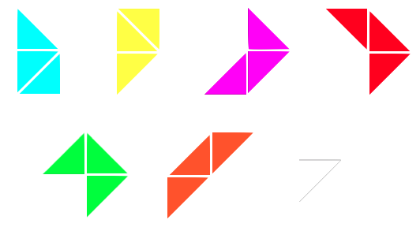
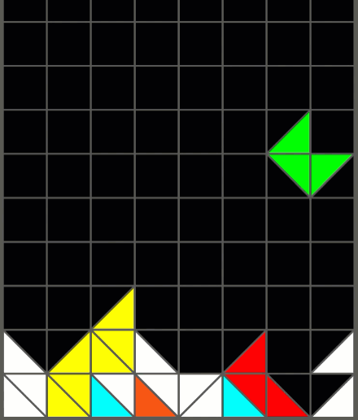
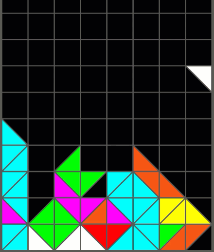
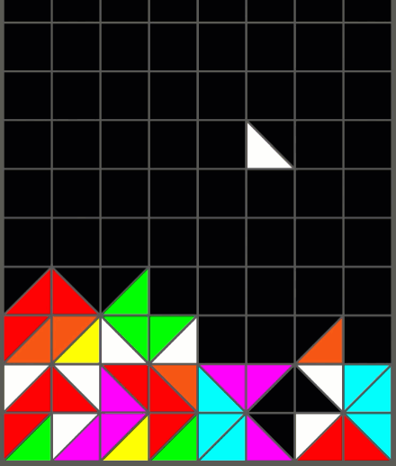
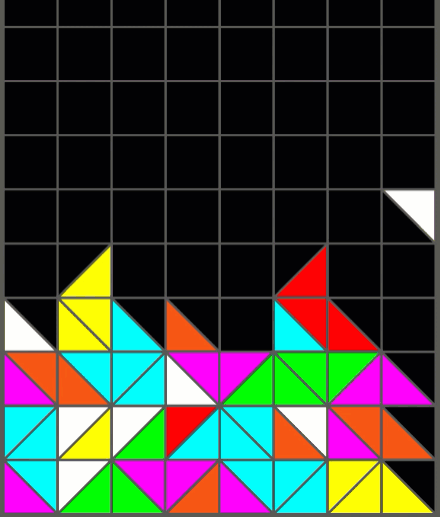

Credit for the background music "EDM Detection Mode" goes to
Kevin MacLeod
High Scores
Points: 0
Lines: 0
Tritris
How to Play
Controls
Use the arrow keys to move left and right. Press down to soft
drop. Use Z and X to rotate. Press Z and X simultaneously to rotate 180 degrees.
Press enter to pause/unpause. Press escape to quick reset.
You can edit the controls in the settings.
Pieces
There are 7 pieces total. There are 6 pieces made out of every
possible configuration of 3 triangles, and 1 piece made out of a
single triangle, which will always spawn in groups of 3.

Mechanics
The mechanics are very similar to NES Tetris. It uses the same
DAS, entry delay, and level speed timings.
All of the pieces are made out of 3 connected right triangles.
There is also a white, single triangle piece which can be used
to fix holes in your stack. It will always come out 3 at a time.
The single triangle is also special, lines will only be cleared
once they have all been placed. This allows you to fill 3 lines
to score a Tritris!
Phasing
IMPORTANT - Since the release of the Youtube video, phasing
has become easier. There are no longer any frame-perfect
tricks. Instead, all phases can be performed by holding each
key (rotate can now be held to become "charged").
One of the most unique mechanics of Tritris is phasing. A piece
will always move to the next location as long as the next
location is valid (no intersecting triangles). By moving a piece
in multiple ways at the same time, pieces are able to do many
types of tucks and spins. Below are a few examples.

The pieces are able to easily move down into an empty
space.

For the bottom right triangle, X (rotate) is held once
above the desired position.
Due to the phasing update, down does not need to be pressed.
Once all 3 triangles are placed, the line clears.
Left or right are held when the piece is above the
desired position, and when the piece moves down, it also
moves horizontally.

Here are a few examples of some phases!
Scoring

A Tritris is scored!
In Tritris, clearing 4 lines at a time is not possible, so
the highest score value is obtained from 3 lines at a time,
a Tritris. This can only be achieved by settings up 3 rows,
each missing only one triangle, then placing a single
triangle in each row. Once all triangles are placed, the
rows clear and a Tritris is scored!
A triple is equivalent to a Tetris in NES Tetris, a double
is equivalent to a triple, and a single is equivalent to a
double.